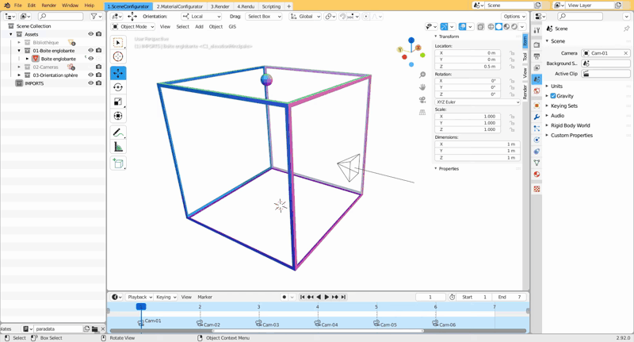

Toute la préparation de la scène se réalise dans l'onglet 1.SceneConfigurator
Importer le maillage
Importer un fichier *.OBJ
Dans la fenêtre d'import, ne pas oublier d'indiquer que "y is forward". Sinon, il faudra mettre à 0 toutes les valeurs de rotation de l'objet importé.

{kind=link}
Importer un fichier *.PLY
Rien de spécial
Note : Il est bien plus simple de travailler avec un fichier au format *.ply avec des vertex color.
Configurer la boite englobante
- Positionner le curseur 3D sur le maillage importé (Shift + clic droit)
- Dans l'outliner, sélectionner la boîte englobante
- Avec `F3`, chercher la fonction `Selection To Cursor`. La boîte englobante est maintenant proche de l'objet à documenter.
{kind=link}
- Affiner le positionnement, l'orientation et les dimensions de la boîte englobante autour de l'objet à documenter. Cette opération peut être réalisée en plusieurs temps :
- avec les vues prédéfinies, positionner, orienter et dimensionner grossièrement la boite englobante
- avec le panneau latéral droit, onglet `Render`, basculer entre les différentes caméras pour ajuster les dimensions
- Arrondir les différentes valeurs à deux décimales maximum (pour plus de commodité dans la copie des différentes valeurs).
- Sélectionner la sphère témoin et :
- la redimensionner pour qu'elle redevienne parfaitement sphérique
- la positionner pour qu'elle soit vue depuis toutes les caméras, sans occulter quelque partie de l'objet documenté.
{kind=link}
- Noter enfin les différentes valeurs correspondant à la position, l'orientation et les dimensions de la boîte englobante dans le tableur (dossier `5_descriptionGeometrale\6_[blocPierre]\*.ods`)
Définir les caractéristiques de l'image
Les caractéristiques des images à produire sont obtenues avec le fichier présent dans le dossier `5_descriptionGeometrale/6_[BlocPierre]/calculDimImage_###.ods`.
Il convient de renseigner les paramètres de la boîte englobante (cadres rouges) :
- la position,
- l'orientation,
- les dimensions.
Ensuite, les paramètres de la documentation sont définis (cadre vert) :
- l'échelle de l'image (ex: `1/5`, `1/10`, `1/20` en général pour les surfaces ornées) influe la taille de l'image image imprimée. Une aide au dimensionnement est placée juste en dessous dans le tableur, pour que l'image produite tienne dans une mise en page de 17 x 21 cm.
- la résolution spatiale de l'image (ex: `1 pixel = 0,8 mm`). Cela assure la qualité de la documentation de l'objet. Pour assurer une bonne qualité d'impression, il faut au moins 300 ppi.
{kind=link}
Appliquer ces caractéristiques aux caméras
- Sélectionner la caméra
- Renseigner les dimensions en pixels de l'image produite par cette caméra.
- Enregistrer les dimensions en pixels de l'image.
- Renseigner l'orthographic scale. Il faut choisir la plus grande des deux valeurs présentes dans le tableur.
- Si le Clipping Start et le Clipping End ont été modifiés, renseigner les nouvelles valeurs dans le tableur.
{kind=link}
Répéter l'opération pour l'ensemble des caméras de la scène.
NOTE : Avec le développement du plugin envisagé, ces deux dernières étapes de renseignement et de configuration seront grandement simplifiées.